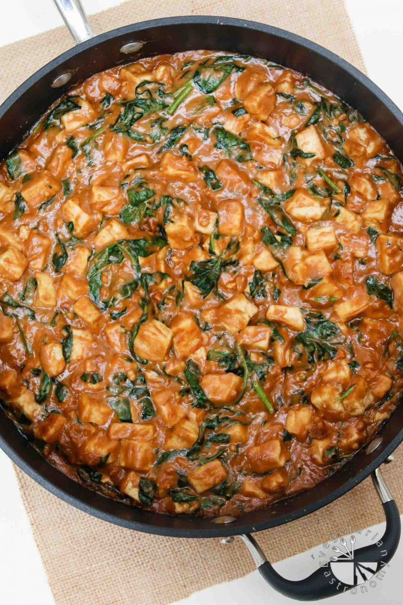

Peanut Butter Tofu

This recipe is made up of a one-bowl easy Thai peanut sauce using peanut butter as the base.
Ingredients
- 1.5 cups fresh spinach leaves, roughly chopped
- 14 oz firm tofu
- 1/2 cup + 2 tbsp natural creamy peanut butter
- 3-4 teasp pure maple syrup
- 1/4 cup rice vinegar
- 2 tbsp fresh cilantro, finely chopped
- 3 cloves garlic, minced
- 1-2 tbsp tamari, or soy sauce
- 1 teasp red crushed pepper
- 1/4-1/2 cup warm water
Steps
- Cut the block of tofu in half. Place each half in 2 clean paper towels one at a time and gently press/squeeze to remove excess stored liquid (without breaking up the tofu).
- Cut the tofu into 1/2-inch cubes and pan fry on medium-high heat with 1 1/2 tbsp cooking oil. Mix and turn frequently until all the water is burned off and the tofu is lightly golden brown on most sides (be sure not to burn the tofu). If you find that the tofu is sticking to the pan, add a little more oil. Set aside.
- While the tofu is cooking, continue on to prepare the peanut sauce.
- Whisk all the ingredients listed for peanut sauce, adding the warm water last. Combine with a spoon until the peanut butter is well blended.
- In a wok or large non-stick skillet, combine pan fried tofu, chopped spinach, and prepared peanut sauce. Mix together on low-medium heat for 5-10min until the spinach is slightly cooked and the tofu has time to marinate in the sauce.
- Be careful not to let the sauce simmer and start to thicken too much. You can stir in a small amount of water if needed.
- Serve hot over cooked rice, quinoa, or fresh spinach for a lighter version.